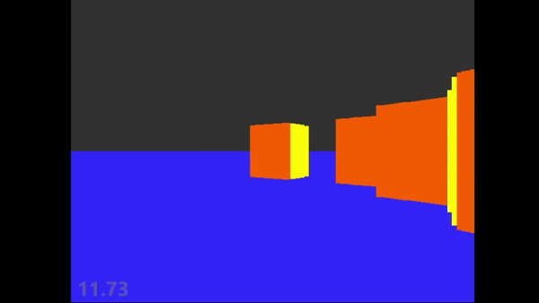
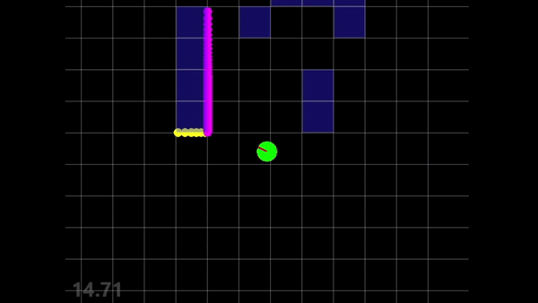

Implementation of the raycasting rendering method used by old school games such as Wolfenstein 3-D. Renders vertical slices of walls that are detected due to collisions with casted rays. The top video shows the final product whereas the bottom shows the casting of the invisible rays and their collisions against the walls to be rendered.

